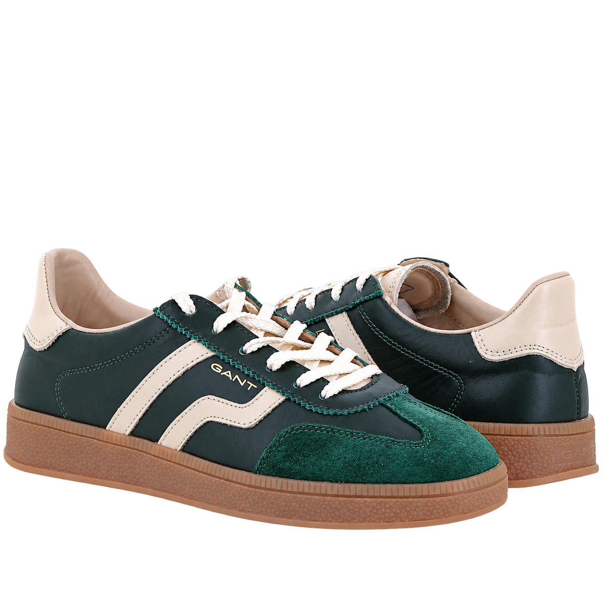
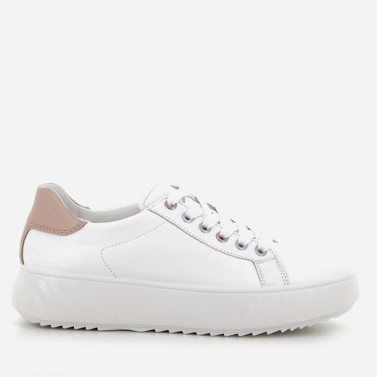
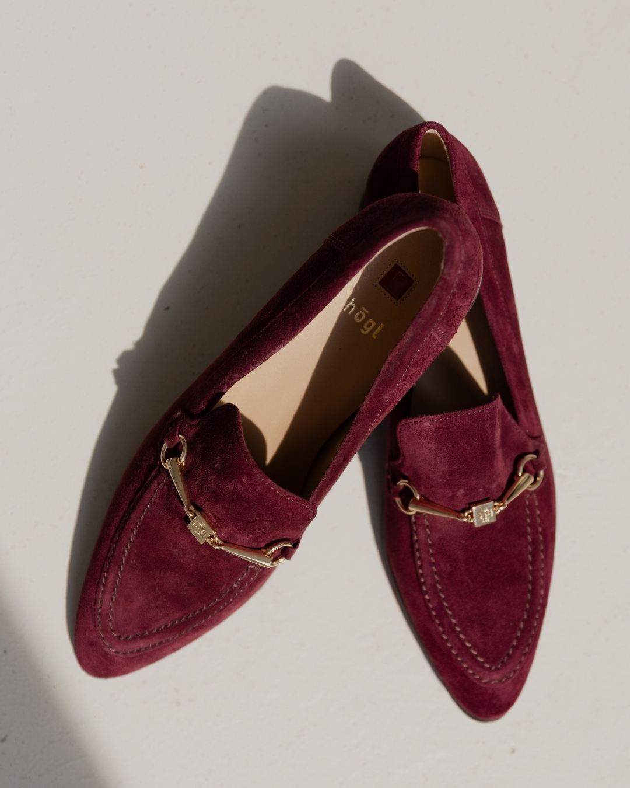

Discover
Vizuelne kolekcije, namjene i pametne ulazne tačke umjesto hladne liste kategorija.
Rekonstrukcija online iskustva
Webshop koji povezuje Planikin široki asortiman, fizičke prodavnice i savjet koji kupca vodi od inspiracije do sigurnog odabira.
COMFORT MEETS COMMERCE
Planika već nudi snažan asortiman kategorija, brendova i tehnologija. Rekonstrukcija ga pretvara u iskustvo u kojem kupac ne filtrira beskrajno — nego brzo dobija relevantan izbor.
Kako radi novi sistem →Vizuelne kolekcije, namjene i pametne ulazne tačke umjesto hladne liste kategorija.
Veličina, komfor, materijal i dostupnost objašnjeni tamo gdje kupac donosi odluku.
Jedan profil, jedna lista želja i ista priča online, u korpi i u prodavnici.
Identitet ostaje snažan, ali svaki element sada ima trgovačku funkciju: otkriti proizvod, potvrditi dostupnost i skratiti put do kupovine.
Šest komponenti. Svaka sa svojim zadatkom.
Interaktivni primjeri · ilustrativni podaciNavigacija organizuje asortiman, a pretraga odmah prikazuje relevantne modele. Kupac vidi proizvod dok još piše.
Od interesa do konkretnog izbora.
Veličina, brend i dostupnost izdvajaju modele koji odgovaraju kupcu. Aktivni filteri ostaju jasno vidljivi iznad rezultata.
Manje traženja, više korisnih rezultata.
Klikni za početni ugao · povuci za rotaciju · strelice na tastaturi
Ilustrativni 3D model: Reebok · Yaroslav Karas / CC BY 4.0
Kožno gornjište
Mekano gazište za svaki dan
Odabrana veličina: 39
Rotirajući 3D prikaz otkriva model iz svakog ugla. Fotografija proizvoda, cijena i dostupne veličine ostaju uz jasnu akciju dodavanja u korpu.
Sigurniji odabir prije kupovine.
Primjer prikaza zalihe za odabrani model i veličinu.
Kupac bira grad i vidi dostupnost odabranog modela i veličine po poslovnicama. Provjera dolazi prije odlaska u prodavnicu.
Povezuje webshop i fizičku prodavnicu.
Kupovina je moguća i bez registracije.
Korpa prikazuje odabrani artikl, veličinu i ukupan iznos s dostavom. Kupac zna šta plaća prije narednog koraka.
Vodi od odabranog para do narudžbe.

✧ Pogodnosti i preporuke na jednom mjestu.
Sačuvana veličina, omiljeni modeli i pregled pogodnosti čine profil korisnim pri svakom povratku u webshop.
Daje kupcu razlog da se vrati.
AI asistent se pojavljuje kada je koristan: pri izboru modela, nedoumici oko veličine, usporedbi artikala ili pronalasku para u najbližoj prodavnici.
Sačuvani favoriti, preporuke i korpa dostupni su na svakom uređaju.
Jasan status dostupnosti po poslovnici i opcija rezervacije u sljedećem koraku.
Personalizovane pogodnosti i relevantne preporuke, bez suvišnih poruka.
Novi webshop ne preuzima samo crvenu boju. Iz nje gradi sistem za modu, komfor i brzu odluku — dovoljno hrabar za kampanju, dovoljno miran za kupovinu.
COLOR SYSTEM
TYPE & RHYTHM
MOTION & FEEDBACK
Suptilni prelazi, jasna potvrda radnje i mikro-animacije koje pomažu kupcu, nikada ne usporavaju kupovinu.
Svaki ekran ima samo jedan posao: da pomjeri kupca u sljedeću korisnu odluku.

NOVA KOLEKCIJAARA / HIGH SOFT
Komfor, veličina, dostupnost i alternativa prije nego nastane pitanje.

DISCOVERY LAYER
Namjena, stil, materijal i sezona postaju urednički ulazi u asortiman.
Vizuelne teme umjesto suhe navigacije kroz dubok katalog.
OMNICHANNEL STOCK
Jednostavna provjera dostupnosti povezuje online interes i fizičku prodavnicu.
Kupac dobija sigurnost prije puta, a prodavnica relevantniji dolazak.
Faze su složene da prvo donesu jasnoću kupcu, zatim inteligenciju i na kraju trajni odnos s kupcem.
REKONSTRUKCIJA CORE ISKUSTVA
Nova informacijska arhitektura, navigacija po namjeni, redizajn listinga i detalja proizvoda, jasni filteri, pretraga i mobilno iskustvo.
AI + OMNICHANNEL
Planika AI stilista, vođenje kroz veličinu, usporedbe, alternativni modeli i povezana dostupnost online i u prodavnicama.
CLUB + GROWTH
Personalizovani Planika Club sloj, kampanje po interesu, wishlist signali, merchandising dashboard i kontinuirana optimizacija konverzije.
Osnovna rekonstrukcija je samostalna cjelina. Kada poslovni prioritet to traži, platforma može rasti kroz povezane module.
HR MODUL
Centralno mjesto za organizaciju timova, onboarding, interne obavijesti, edukacije i uloge u digitalnim kanalima.
Opcionalna nadogradnjaDMS
Siguran tok ugovora, procedura, dobavljačke dokumentacije i odobrenja sa jasnim verzijama i pravima pristupa.
Opcionalna nadogradnjaRAČUNOVODSTVO
Integracioni sloj za računovodstvo, robno poslovanje i izvještavanje — podaci se prenose kada treba, bez duplog unosa.
Opcionalna nadogradnjaPRIVATNA FISKALIZACIJA
Zaštićen privatni tok fiskalizacije i evidencije transakcija, prilagođen odobrenom poslovnom procesu i budućim integracijama.
Opcionalna nadogradnjaSpremni za sljedeći korak?
Ova ponuda je koncept rekonstrukcije. Investicija se definiše nakon zajedničkog discoveryja, prioriteta i tehničke analize postojećeg sistema.
Razgovarajmo o projektu ↗